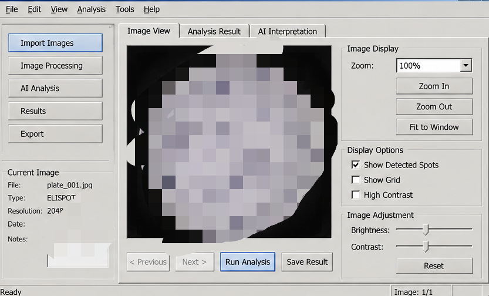
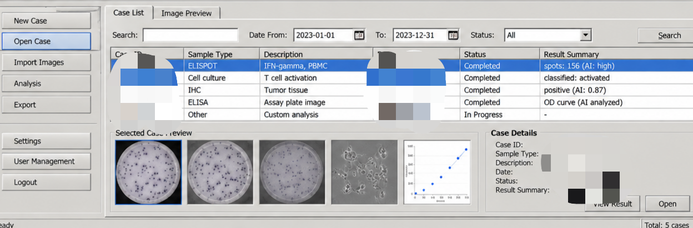

Project showcase / Registered software
AI-Assisted Laboratory Image Analysis
Computer vision and AI-assisted interpretation for laboratory and diagnostic imaging workflows.
The software takes images and video from laboratory and diagnostic workflows, detects and measures the visual features in them, such as the spots in an assay, and passes those measurements to AI models for a preliminary classification, interpretation, and statistical summary. Every result goes to a person for review. Cases are archived with their source images, and the application also handles user accounts, search, and local image files.
China National Software Copyright Registry #12137438
From image to structured result
The analysis workspace brings image import, processing, AI analysis, result review, and export into one interface. Operators can inspect a processed assay image, review detected spots, adjust the display, and retain the quantitative result.

Case-centered review
The case workspace keeps sample type, description, status, image previews, result summaries, and supporting charts together. Search and date filters help operators return to completed analyses while preserving the associated source images and results.
